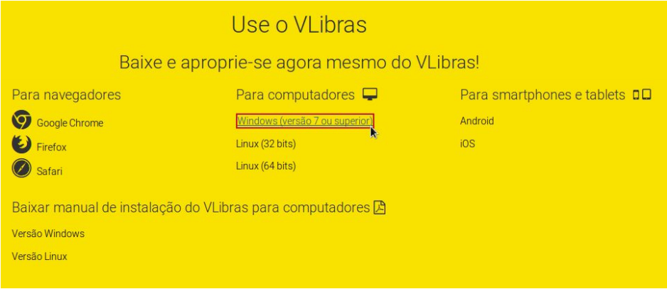

Instalação da Ferramenta¶
Obtendo os arquivos de instalação¶
Faça o download do instalador clicando no link na página do VLibras na página do VLibras (http://www.vlibras.gov.br), conforme ilustrado na figura abaixo.
Procedimentos de instalação¶
Após efetuar o download do instalador do VLibras e executá-lo, uma tela de aviso de segurança será exibida, conforme ilustrado na figura abaixo.
Caso o usuário confirme que deseja instalar o software, o download do código fonte, dependências e do dicionário serão efetuados.
Após a finalização do download, o usuário deverá autorizar a instalação do software, conforme ilustrado na figura abaixo.